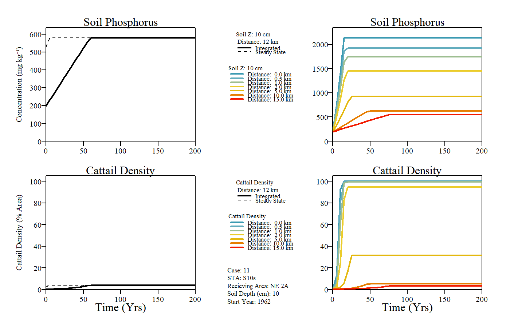
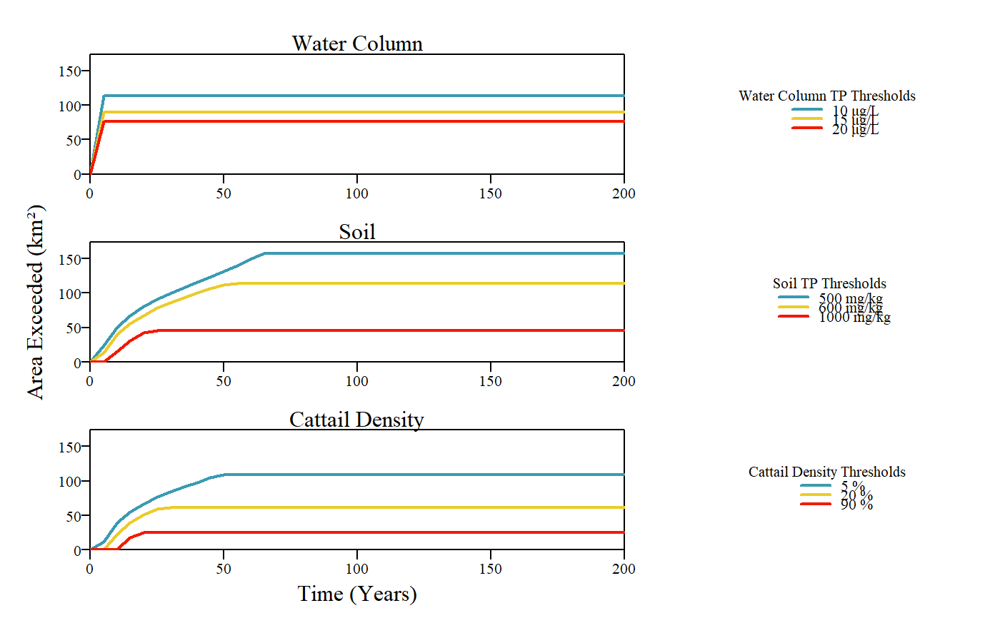

This function evaluates results of the EPGM model over a simulated period relative to ecological or regulatory thresholds.
EPGMThreshold( time.dat, WaterColumn.Thresholds = c(10, 15, 20), Soil.Thresholds = c(500, 600, 1000), cattail.Thresholds = c(5, 20, 90), plot.exceed = TRUE, raw.area.output = FALSE, results.area.table = TRUE )
| time.dat | a |
|---|---|
| WaterColumn.Thresholds | a list of three water column total phosphorus thresholds to evaluate time output. |
| Soil.Thresholds | a list of three soil total phosphorus thresholds to evaluate time output. |
| cattail.Thresholds | a list of three cattail density thresholds to evaluate time output. |
| plot.exceed | If |
| raw.area.output | If |
| results.area.table | If |
This function computes and plots the distance profile along the gradient based on input values
As described in the original documentation, the model is designed to simulate marsh enrichment (responses to increasing P load), not recovery (responses to decreasing in load).
#> Warning: conversion failure on 'Concentration (mg kgâ»Â¹)' in 'mbcsToSbcs': dot substituted for <e2>#> Warning: conversion failure on 'Concentration (mg kgâ»Â¹)' in 'mbcsToSbcs': dot substituted for <81>#> Warning: conversion failure on 'Concentration (mg kgâ»Â¹)' in 'mbcsToSbcs': dot substituted for <bb>EPGMThreshold(example)#> $TotalArea.km2 #> [1] 157.5 #> #> $Thresholds #> Thresholds Value1 Value2 Value3 #> 1 Water Column (ug/L) 10 15 20 #> 2 Soil (mg/kg) 500 600 1000 #> 3 Cattail Density (%) 5 20 90 #> #> $WaterColumn #> Time.Step Year WC.10 WC.15 WC.20 #> 1 0 1961 0.000 0.000 0.000 #> 2 5 1966 113.925 89.775 76.125 #> 3 10 1971 113.925 89.775 76.125 #> 4 15 1976 113.925 89.775 76.125 #> 5 20 1981 113.925 89.775 76.125 #> 6 25 1986 113.925 89.775 76.125 #> 7 30 1991 113.925 89.775 76.125 #> 8 35 1996 113.925 89.775 76.125 #> 41 200 2161 113.925 89.775 76.125 #> #> $Soil #> Time.Step Year Soil.500 Soil.600 Soil.1000 #> 1 0 1961 0.000 0.000 0.000 #> 2 5 1966 23.625 13.125 0.000 #> 3 10 1971 50.925 40.425 15.225 #> 4 15 1976 67.725 56.175 30.975 #> 5 20 1981 80.325 67.725 42.525 #> 6 25 1986 90.825 78.225 45.675 #> 7 30 1991 99.225 85.575 45.675 #> 8 35 1996 107.625 92.925 45.675 #> 41 200 2161 157.500 113.925 45.675 #> #> $Cattail #> Time.Step Year Cattail.5 Cattail.20 Cattail.90 #> 1 0 1961 0.000 0.000 0.000 #> 2 5 1966 12.075 0.000 0.000 #> 3 10 1971 39.375 23.625 1.575 #> 4 15 1976 55.125 39.375 18.375 #> 5 20 1981 66.675 50.925 25.725 #> 6 25 1986 77.175 59.325 25.725 #> 7 30 1991 84.525 61.425 25.725 #> 8 35 1996 91.875 61.425 25.725 #> 41 200 2161 108.675 61.425 25.725 #>#END